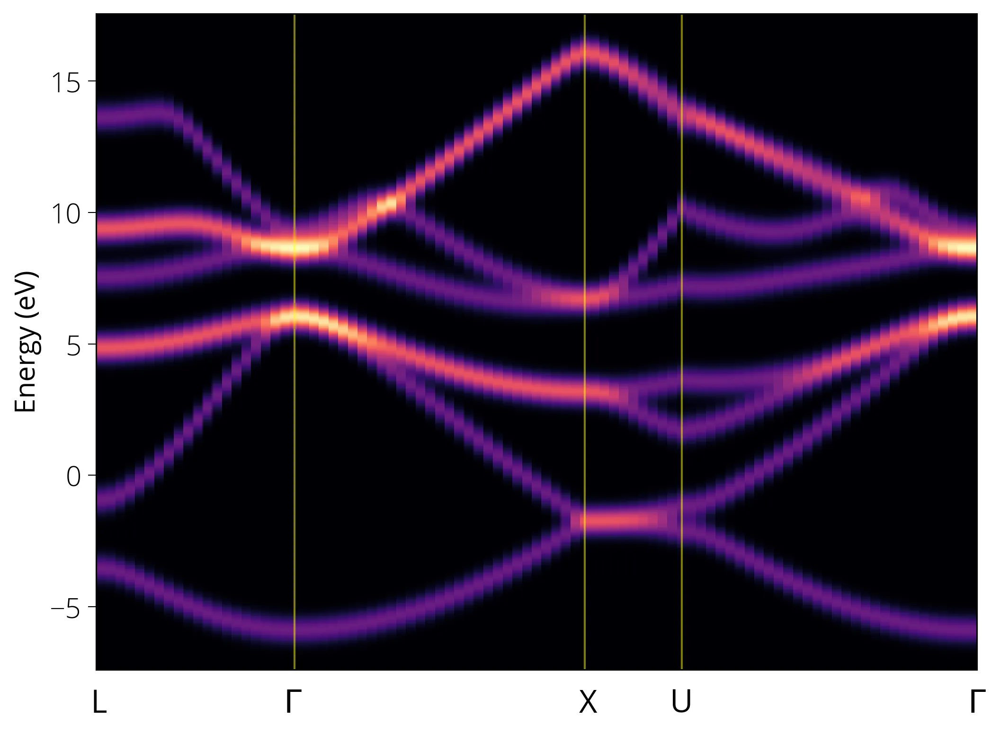

DOS resolvida em k
Aqui vamos calcular a densidade de estados resolvida em k para o silício. Começamos com o cálculo autoconsistente. Este é o input:
pw.x -inp si_scf.in > si_scf.outEm seguida, o cálculo de bandas. Note que aqui o número de pontos k é o dobro do usado no cálculo de bandas anterior.
pw.x -inp si_bands.in > si_bands.outCalcule as projeções orbitais com a informação resolvida em k:
src/silicon/si_projwfc.in
&projwfc
outdir = './tmp/'
prefix = 'silicon'
ngauss = 0
degauss = 0.036748
DeltaE = 0.005
kresolveddos = .true.
filpdos = 'silicon.k'
/projwfc.x -inp si_projwfc.in > si_projwfc.outIsso gera as projeções orbitais separadas e também a soma total da DOS resolvida em k. Faça os gráficos:
notebooks/silicon-kpdos.ipynb
import matplotlib.pyplot as plt
from matplotlib import rcParamsDefault
import numpy as np
import zipfile
%matplotlib inline
# o arquivo de dados foi compactado para reduzir o tamanho
zipobj = zipfile.ZipFile('../src/silicon/silicon.k.pdos_tot.zip', 'r')
zipdata = zipobj.open('silicon.k.pdos_tot')
data = np.loadtxt(zipdata)
k = np.unique(data[:, 0]) # k values
e = np.unique(data[:, 1]) # dos energy values
dos = np.zeros([len(k), len(e)])
for i in range(len(data)):
e_index = int(i % len(e))
k_index = int(data[i][0] - 1)
dos[k_index, e_index] = data[i][2]
plt.pcolormesh(k, e, dos.T, cmap='magma', shading='auto')
# plt.ylim(-2, 10)
plt.xticks([])
plt.ylabel('Energy (eV)')
plt.xticks([])
plt.gcf().text(0.12, 0.06, 'L', fontsize=16, fontweight='normal')
plt.gcf().text(0.29, 0.06, '$\Gamma$', fontsize=16, fontweight='normal')
plt.gcf().text(0.55, 0.06, 'X', fontsize=16, fontweight='normal')
plt.gcf().text(0.63, 0.06, 'U', fontsize=16, fontweight='normal')
plt.gcf().text(0.892, 0.06, '$\Gamma$', fontsize=16, fontweight='normal')
plt.axvline(21, c='yellow', lw=1, alpha=0.5)
plt.axvline(51, c='yellow', lw=1, alpha=0.5)
plt.axvline(61, c='yellow', lw=1, alpha=0.5)
plt.show()
ℹ️ Info
Se estiver usando ibrav=0, calcule o projwfc com a opção lsym=.false..
Se houver contribuição de vários orbitais, podemos somar as projeções desejadas com o programa sumpdos.x. Por exemplo:
sumpdos.x *\(Cl\)*\(p\) > Cl_2p_tot.datAssim podemos fazer gráficos das diferentes projeções orbitais com resolução em energia e em k.